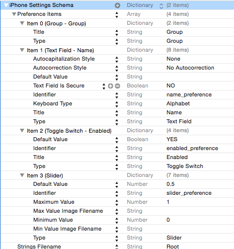

Preferencias
Preferencias de usuario¶
En la mayoría de las aplicaciones podemos configurar una serie de parámetros que las adaptan a las preferencias o necesidades del usuario. Son elementos tales como colores, tipos de fuentes, unidades de medida, nombres de usuarios y contraseñas de servicios de terceros, etc.
iOS nos ofrece un mecanismo estándar para almacenar estas preferencias de modo permanente. El API es bastante sencillo y nos permite establecer unos valores por defecto, modificarlos según lo que indique el usuario y leer los valores previamente fijados.
Hay que destacar que iOS solo nos da el API para leer/almacenar las preferencias, pero no el interfaz de usuario para mostrarlas/modificarlas, que es nuestra responsabilidad. Hay una excepción: si queremos que nuestras preferencias aparezcan dentro de las del sistema, el propio iOS se encargará de la interfaz.
Qué se puede guardar en las preferencias¶
Desde el punto de vista del tipo de datos, las preferencias de usuario no son más que una property list en la que el objeto “raíz” es un NSDictionary. El sistema se encarga de serializar/deserializar los valores a/desde un archivo .plist de modo automático.
Si usamos este API nos ahorraremos tener que gestionar manualmente el .plist como hacíamos en la sección anterior. No tenemos que crearlo nosotros, comprobar si existe, guardarlo cuando toque o recuperar los datos cuando hagan falta, iOS lo hará por nosotros.
El fichero .plistcon las preferencias se almacena automáticamente en el directorio Library/Preferences de la aplicación. Su nombre será el del proyecto de Xcode, precedido del "organization identifier" del proyecto.
Por defecto el .plist se genera en formato binario. Aunque no esté en modo texto podemos igualmente abrirlo y editarlo con el editor de .plist de Xcode. También podemos convertirlo a XML con una herramienta en línea de comandos llamada plutil, instalada por defecto junto con Xcode:
1 | plutil -convert xml1 -o resultado_xml.plist fichero_original.plist |
Acceder a las preferencias¶
Las preferencias del usuario actual son accesibles a través del singleton de la clase UserDefaults. Para acceder a la única instancia, usar el inicializador del mismo nombre
1 | let preferencias = UserDefaults() |
Como las aplicaciones iOS están en un sandbox cada una solo tiene acceso a sus propias preferencias. El propio sistema no puede cambiar las preferencas de nuestra aplicación, salvo las que coloquemos dentro de las “generales”, como veremos en el punto siguiente
Dentro del almacén de preferencias cada una de ellas tiene una clave, que será una cadena, y un valor. Así, podemos acceder a una preferencia con una familia de métodos xxx(forKey:), donde la "xxx" varía según el tipo de datos: integer, bool, float, double, array, object,…
Por ejemplo, supongamos un juego en el que tuviéramos almacenado el nick del usuario y el nivel alcanzado. Podríamos obtener los valores con:
1 2 | let nick = preferencias.string(forKey:"nick"); let nivel = preferencias.integer(forKey: "nivel") |
Al leer los valores de las preferencias se plantea un problema: cómo saber si ya tenemos un valor almacenado en las preferencias o no. En ciertos tipos de datos esto es sencillo: en un String como la preferencia nick, de no haber ya algo almacenado con esa clave se obtendrá nil. Pero con otros tipos no es tan fácil, ya que en el caso del nivel si la preferencia no existía se obtendrá 0. Entonces ¿cómo diferenciar si la preferencia se ha fijado a 0 o bien es que no se ha fijado?. La solución es registrar valores por defecto para todas las preferencias, de modo que no pueda haber una preferencia con un valor no fijado, bien sea porque se ha hecho por defecto o bien sea porque lo ha hecho una acción del usuario.
Registrar valores por defecto¶
Podemos registrar un conjunto de preferencias por defecto pasándole un diccionario al método registerDefaults de UserDefaults:
1 2 3 4 5 | let prefs = UserDefaults() prefs.register(defaults:[ "nick" : "anonimo", "nivel" : 1 ]) |
Hay que destacar que los valores registrados por defecto no son permanentes. Es decir, que hay que registrarlos cada vez que arranque la aplicación.
Si registramos un valor por defecto y este ya ha sido fijado por código (en la siguiente sección veremos cómo) el valor por defecto no “machacará” al ya fijado. Cuando iOS busca el valor para una preferencia sigue un esquema de “dominios”, en el que si no encuentra la clave en un dominio la busca en el siguiente. De este modo, primero busca en el dominio de los valores fijados por el usuario y si lo encuentra aquí lo devuelve. Es solo si no lo encuentra aquí cuando pasa a consultar los valores por defecto.
En un poco tedioso tener que volcar en el código un diccionario con todos los valores por defecto. Un método muy habitual de registrar los valores por defecto de modo más “limpio” es almacenarlos en un archivo .plist y deserializarlos con initWithContentsOfFile, como vimos en el apartado de cómo leer property lists.
Modificar las preferencias¶
Simplemente tenemos que fijar la clave al valor que queramos usando la familia de métodos set(valor,forKey:)
1 2 3 | let prefs = UserDefaults() prefs.set(5, forKey:"nivel") prefs.set("Pepito", forKey:"nick") |
Por cuestiones de eficiencia, iOS no hace persistente el cambio inmediatamente sino a intervalos regulares o en momentos especiales (por ejemplo justo antes de salir de la aplicación). Una property list no se puede modificar de manera parcial y hay que crearla entera de nuevo, de manera que no sería eficiente persistir siempre los datos tras ejecutar el set. Por código podemos forzar el cambio en el .plist llamando al método synchronize de las preferencias
1 | UserDefaults().synchronize() |
Otra forma de "forzar" la persistencia probando la aplicación es salir de la misma pulsando en el botón "home" (Shift+Cmd+H en el simulador) para que pase a background, momento en el que, como ya hemos dicho, iOS almacena de modo permanente los valores actuales.
Como iOS tiene que modificar los datos si hay preferencias modificadas desde la última vez que se guardaron, no es aconsejable cambiar el valor de una preferencia “a las primeras de cambio”. Solo es adecuado si no es previsible que vaya a cambiar dentro de poco tiempo. Una estrategia típica es fijar los valores justo antes de salir de la aplicación.
Ubicar las preferencias en el “panel de control” general¶
El sistema nos da la posibilidad de controlar ciertas preferencias de nuestra aplicación dentro de las preferencias generales del sistema, en un apartado reservado a ella. Esto es lo que se conoce en iOS como un settings bundle. Podemos colocar aquí todas las preferencias o solo algunas.
Apple recomienda colocar en el sistema solo las preferencias que se cambien en raras ocasiones. Por ejemplo en una aplicación que gestione un servicio de terceros podemos colocar aquí las credenciales de uso del servicio (login y password)
A diferencia de las preferencias dentro de la aplicación, donde iOS nos da un API para editarlas/verlas pero no una interfaz esto es al contrario. En un fichero .plist con un formato especial podemos crear de modo sencillo una interfaz para las preferencias.
Para crear un settings bundle en Xcode ir a File > New > File ... y en el cuadro de diálogo que aparecerá, dentro del tipo Resource elegir Settings Bundle. Se creará un archivo de tipo property list llamado Root.plist y algunos archivos auxiliares para la internacionalización (necesarios ya que vamos a tratar con elementos de interfaz).
Si editamos el Root.plist con el editor de Xcode podemos ver que tiene un formato un tanto especial: la lista de preferencias se representa con un array de items. Las propiedades de estos items son las que determinan el tipo de widget a usar para editar/ver la preferencia, sus parámetros y la clave con la que se va a almacenar la preferencia asociada.
En el ejemplo que se muestra a continuación, que se corresponde con el Root.plist que crea por defecto Xcode, puede verse que el item 1 es de tipo "campo de texto", que su title (la etiqueta que se ve en las preferencias) es Name, que el widget tiene una serie de propiedades (cuando se edita aparece un teclado alfabético, no es seguro - o sea, se muestra el contenido, …) y está asociada a la preferencia cuya clave es name_preference (propiedad Identifier).

No tenemos espacio en estos apuntes para explicar más detalladamente el proceso de configuración del bundle. El lector interesado puede consultar el apartado “implementing an iOS settings bundle” de la “Preferences and Settings Programming Guide” de Apple.